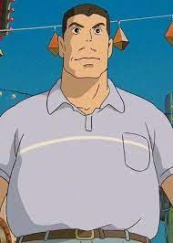

Akio Ogino
Akio Ogino é um homem da classe trabalhadora, marido de Yūko Ogino e pai de Chihiro Ogino no filme de animação japonês "A Viagem de Chihiro". Como punição por seus crimes contra o Mundo dos Espíritos, Akio é amaldiçoado e transformado em porco durante grande parte do filme.
Personalidade
Embora sua personalidade não seja totalmente elaborada no filme, é mostrado na introdução que ele é extremamente confiante e corajoso, conduzindo seu carro por um caminho não desenvolvido em Tochinoki depois de perder uma curva. Sua curiosidade, amor à aventura e descuido geral o coloca primeiro no portão vermelho, a entrada do Reino dos Espíritos, e depois o coloca sob uma maldição.
Simbolismo
Mesmo depois que ele e sua esposa são transformados em porcos, eles continuam a comer. Hayao Miyazaki mostra que as pessoas não são sensíveis ao seu ambiente, continuando sua forma destrutiva. Akio e sua esposa causam problemas para sua filha Chihiro, que agora tem que salvá-los.
Aparência física
Akio tem pele levemente bronzeada, cabelos curtos e castanhos e olhos pequenos e de cor escura. Em comparação com outros personagens da série, Akio tem uma figura muito volumosa, embora a maior parte do seu volume seja atribuído à gordura corporal em oposição ao músculo. Ele também possui um bigode muito levemente acentuado no lábio superior. Ele usava uma camisa pólo azul claro com listras brancas e jeans azuis antes de ser amaldiçoado.